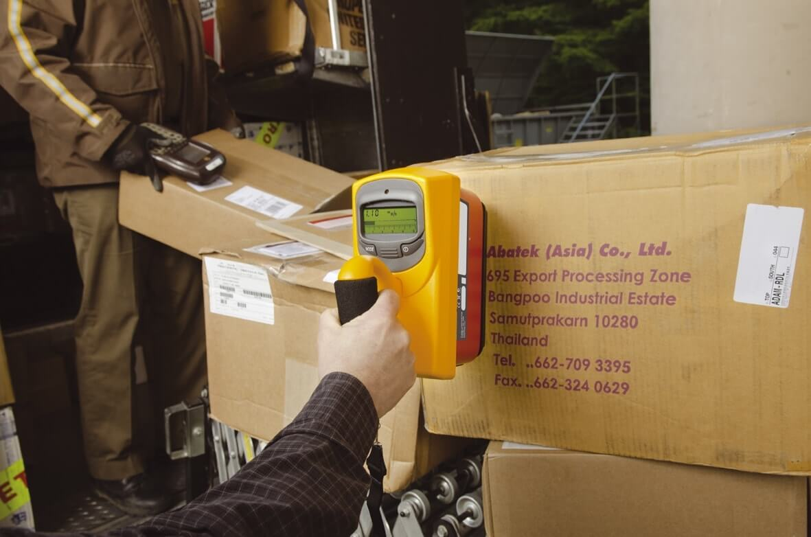
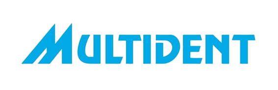

Servicios Área Médica
Estos servicios están dirigidos para aquellos usuarios que cuentan con equipos médicos o dentales, tales como: tomógrados, mamógrafos, arco en C, cineangiógrafo, equipos convencionales, equipos para fluroscopía, tomógrafo dental, rayos X dentales periapicales y panorámicos.
Brindamos
Control de calidad a equipos de rayos X médicos y dentales
Diseño, cálculo de blindaje y construcción de salas de rayos X
Acondicionamiento de salas de rayos X
Confección de puertas y biombos plomados con visor de vidrio plomado
Venta y colocación de visores de vidrio plomado

Evaluación de condiciones de seguridad radiológica de salas de rayos X
Medición de niveles de radiación
Asesoría para obtención o renovación de licencias de operación
Nuestro Clientes
Atendemos a clínicas, hospitales, policlínicos, postas médicas, centros de salud, consultorios dentales, centros médicos ocupacionales, entre otros. Algunos de nuestros clientes satisfechos son:
